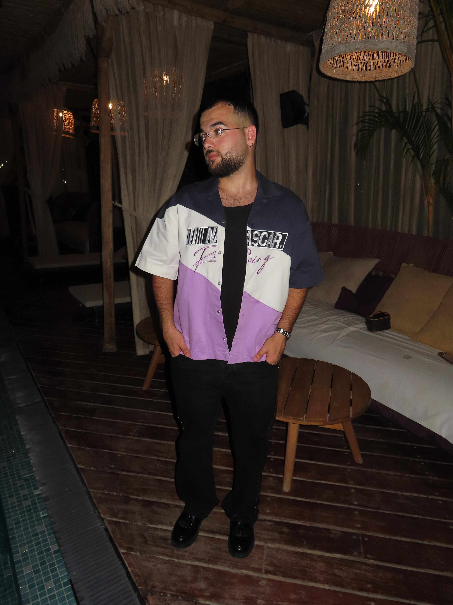

> Booting system
> Authenticating user
> Systems ready_
Initializing
[Hello, Ilay Sandrusi]
age: 23location: Israel, Be'er Sheva
focus: Quality Assurance Tester
status: Available for full-time position
availability: immediate
learning_mode: always_on
philosophy: Fail > Learn > Repeat
Welcome to my personal system - A digital space built to showcase my identity, skillset, and direction.
> Validating input
> Systems ready_
values_db.json
{
"growth": true,
"openness": true,
"privacy": true,
"boldness": true,
"overthinking": {
"value": true,
"note": "Details: sharp. Balance: learning."
},
"creativity": true,
"initiative": true,
"sensitivity": true,
"authenticity": true,
"self_doubt": {
"value": true,
"note": "Trust system: in progress."
},
"stubbornness": true,
"organization": true,
"accountability": true,
"problem_solving": true,
"learning_mindset": true,
"cooperation": true,
"integrity": true
}
This "Values Database" reflects my personality traits - as a person.
> Validating input
> Systems ready_
user_activity.log
Until 2024 :
I've been into computers since a young age. I built my own PC, learned how to install operating systems, and spent time exploring computer games.
I've been into computers since a young age. I built my own PC, learned how to install operating systems, and spent time exploring computer games.
2025:
Manual QA course – gained hands-on skills in:
- Managing client-side and server-side testing for Web and Mobile (iOS & Android), including writing and executing test cases and reporting bugs.
- Writing full test documentation: STD, STP, STR, and practicing reading SRS documents to gain familiarity and extract test scenarios.
- Managing tests with TestRail and reporting defects in Jira, including defining severity and tracking fixes.
- Solid understanding of development methodologies: Agile (Scrum) and Waterfall.
- Strong SQL knowledge up to JOIN level, with hands-on experience in REST API testing using Postman (GET/POST/PUT/DELETE, JSON validation, HTTP status codes).
- Practical experience with a wide range of testing types: functional (positive/negative/edge/CRUD), UI/UX, regression, sanity, integration, cross-browser/device, accessibility, security, performance, load, recovery, and resilience testing.
- Applied technical skills in HTML & CSS, including building personal websites.
- Web Project (TMS): 108 bugs found, 2 improvements suggested, documented in STR.
- Mobile Project (Pikud Haoref): 441 test cases, 13 bugs reported, 1 improvement suggested.
- Managing client-side and server-side testing for Web and Mobile (iOS & Android), including writing and executing test cases and reporting bugs.
- Writing full test documentation: STD, STP, STR, and practicing reading SRS documents to gain familiarity and extract test scenarios.
- Managing tests with TestRail and reporting defects in Jira, including defining severity and tracking fixes.
- Solid understanding of development methodologies: Agile (Scrum) and Waterfall.
- Strong SQL knowledge up to JOIN level, with hands-on experience in REST API testing using Postman (GET/POST/PUT/DELETE, JSON validation, HTTP status codes).
- Practical experience with a wide range of testing types: functional (positive/negative/edge/CRUD), UI/UX, regression, sanity, integration, cross-browser/device, accessibility, security, performance, load, recovery, and resilience testing.
- Applied technical skills in HTML & CSS, including building personal websites.
- Web Project (TMS): 108 bugs found, 2 improvements suggested, documented in STR.
- Mobile Project (Pikud Haoref): 441 test cases, 13 bugs reported, 1 improvement suggested.
Next:
To land my first QA job, gain experience, and grow into a skilled and reliable tester.
To land my first QA job, gain experience, and grow into a skilled and reliable tester.
A personal record of what I've done, learned, and explored so far.
> Validating input
> Systems ready_
qa_reason_log.json
{
"why_qa": [
"Enjoy solving problems and breaking things (on purpose)",
"I enjoy learning new tools and trying new ways to solve problems.",
"I find satisfaction in noticing the small details.",
"QA lets me be curious, creative, and careful - all at once.",
"I enjoy figuring things out - even if I fail first.",
"I like feeling useful - especially when it helps others."
]
}
> Validating input
> Systems ready_
[Visual.System]
